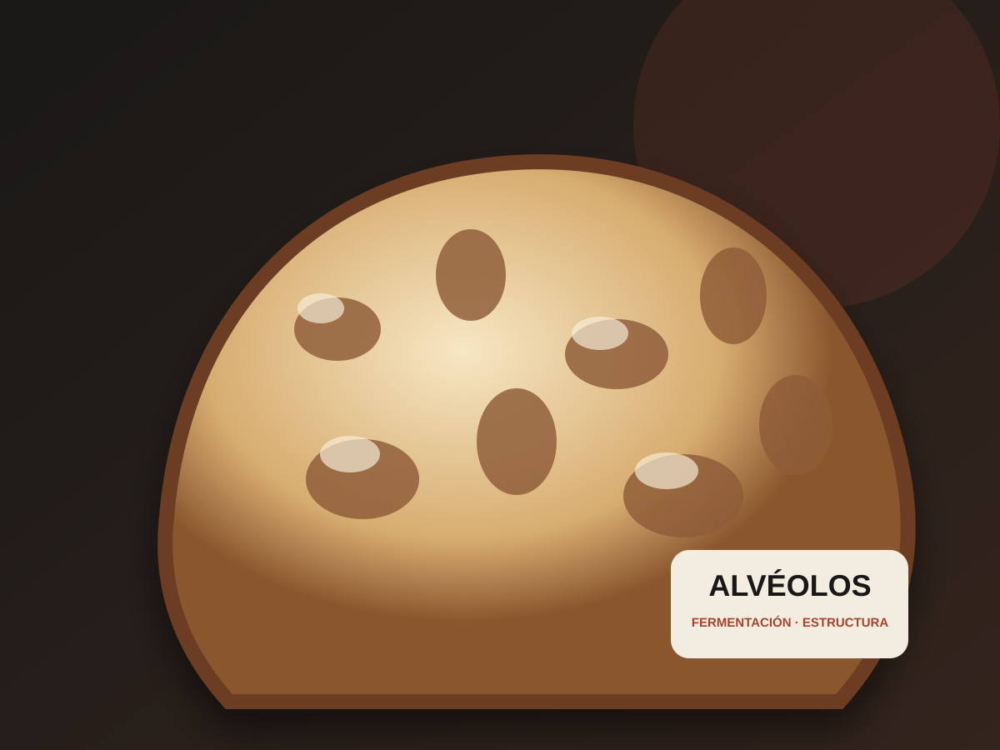

Herramienta funcional
Convierte una idea en cantidades.
Calcula una fórmula de masa a partir del número de pizzas, peso e hidratación.
Cronograma inverso
Próxima fase: parte de la hora en que quieres hornear y calcula cada paso hacia atrás.
Diagnóstico de masa
Próxima fase: conecta síntomas con temperatura, fermentación, reposo y manejo.
Registro de pruebas
Próxima fase: guarda fórmula, lote, equipo, fotos y resultado dentro de tu cuenta.